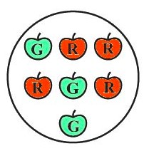

(a) Spinning a wheel
The outcomes are the different sectors where the pointer can stop. Based on the typical figure for this problem, the outcomes are A, B, C, and D .
(b) Tossing two coins together
The possible outcomes for each coin are Heads (H) or Tails (T). When tossing two coins, we list all possible combinations.
The outcomes are (H, H), (H, T), (T, H), (T, T) .
(i) (a) a prime number (b) not a prime number.
The possible outcomes when a die is thrown are 1, 2, 3, 4, 5, 6.
(a) A prime number: Prime numbers are those with exactly two factors, 1 and the number itself. In the outcomes of a die, the prime numbers are 2, 3, and 5 .
(b) Not a prime number: These are the numbers from the list that are not prime. The numbers are 1, 4, and 6 .
(ii) (a) a number greater than 5 (b) a number not greater than 5.
(a) A number greater than 5: From the list of outcomes, the only number greater than 5 is 6 .
(b) A number not greater than 5: This includes all numbers that are 5 or less. The numbers are 1, 2, 3, 4, and 5 .
(a) Probability of the pointer stopping on D in (Question 1-(a))?
Based on the diagram for Question 1, there are 5 sectors in the spinning wheel: A, A, B, C, D. The total number of outcomes is 5.
Number of outcomes for event 'stopping on D' = 1
Probability = $$ \frac{\text{Number of favourable outcomes}}{\text{Total number of outcomes}} = \frac{1}{5} $$
Answer: The probability of the pointer stopping on D is 1/5 .
(b) Probability of getting an ace from a well shuffled deck of 52 playing cards?
In a standard deck of 52 playing cards, there are 4 aces (one for each suit).
Number of aces = 4
Total number of cards = 52
Probability = $$ \frac{\text{Number of aces}}{\text{Total number of cards}} = \frac{4}{52} = \frac{1}{13} $$
Answer: The probability of getting an ace is 1/13 .
(c) Probability of getting a red apple. (See figure below)
Looking at the figure, there are a total of 7 apples (4 green and 3 red).
Number of red apples = 3
Total number of apples = 7
Probability = $$ \frac{\text{Number of red apples}}{\text{Total number of apples}} = \frac{3}{7} $$
Answer: The probability of getting a red apple is 3/7 .
The total numbers are 1, 2, 3, 4, 5, 6, 7, 8, 9, 10 . The total number of outcomes is 10 .
(i) getting a number 6?
Getting a number 6: There is only one slip with the number 6.
Probability = $$ \frac{1}{10} $$
Answer: The probability is 1/10 .
(ii) getting a number less than 6?
Getting a number less than 6: The numbers are 1, 2, 3, 4, 5. There are 5 such numbers.
Probability = $$ \frac{5}{10} = \frac{1}{2} $$
Answer: The probability is 1/2 .
(iii) getting a number greater than 6?
Getting a number greater than 6: The numbers are 7, 8, 9, 10. There are 4 such numbers.
Probability = $$ \frac{4}{10} = \frac{2}{5} $$
Answer: The probability is 2/5 .
(iv) getting a 1-digit number?
Getting a 1-digit number: The 1-digit numbers are 1, 2, 3, 4, 5, 6, 7, 8, 9. There are 9 such numbers.
Probability = $$ \frac{9}{10} $$
Answer: The probability is 9/10 .
Total number of sectors = 3 (green) + 1 (blue) + 1 (red) = 5 .
Probability of getting a green sector?
Number of green sectors = 3
Probability = $$ \frac{3}{5} $$
Answer: The probability of getting a green sector is 3/5 .
What is the probability of getting a non-blue sector?
A non-blue sector means a green or a red sector.
Number of non-blue sectors = 3 (green) + 1 (red) = 4
Probability = $$ \frac{4}{5} $$
Answer: The probability of getting a non-blue sector is 4/5 .
The total number of outcomes when a die is thrown is 6 .
(i) (a) Probability of getting a prime number (b) not a prime number.
(a) The prime numbers are 2, 3, 5 . There are 3 outcomes.
Probability = $$ \frac{3}{6} = \frac{1}{2} $$
Answer: The probability is 1/2 .
(b) The non-prime numbers are 1, 4, 6 . There are 3 outcomes.
Probability = $$ \frac{3}{6} = \frac{1}{2} $$
Answer: The probability is 1/2 .
(ii) (a) Probability of getting a number greater than 5 (b) a number not greater than 5.
(a) The only number greater than 5 is 6 . There is 1 outcome.
Probability = $$ \frac{1}{6} $$
Answer: The probability is 1/6 .
(b) The numbers not greater than 5 are 1, 2, 3, 4, 5 . There are 5 outcomes.
Probability = $$ \frac{5}{6} $$
Answer: The probability is 5/6 .